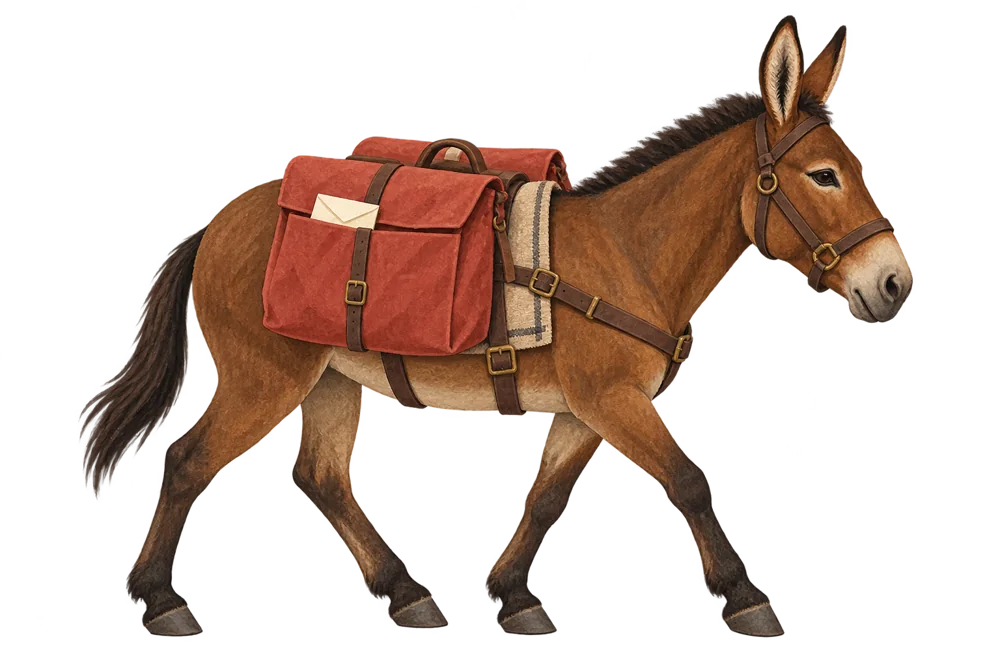
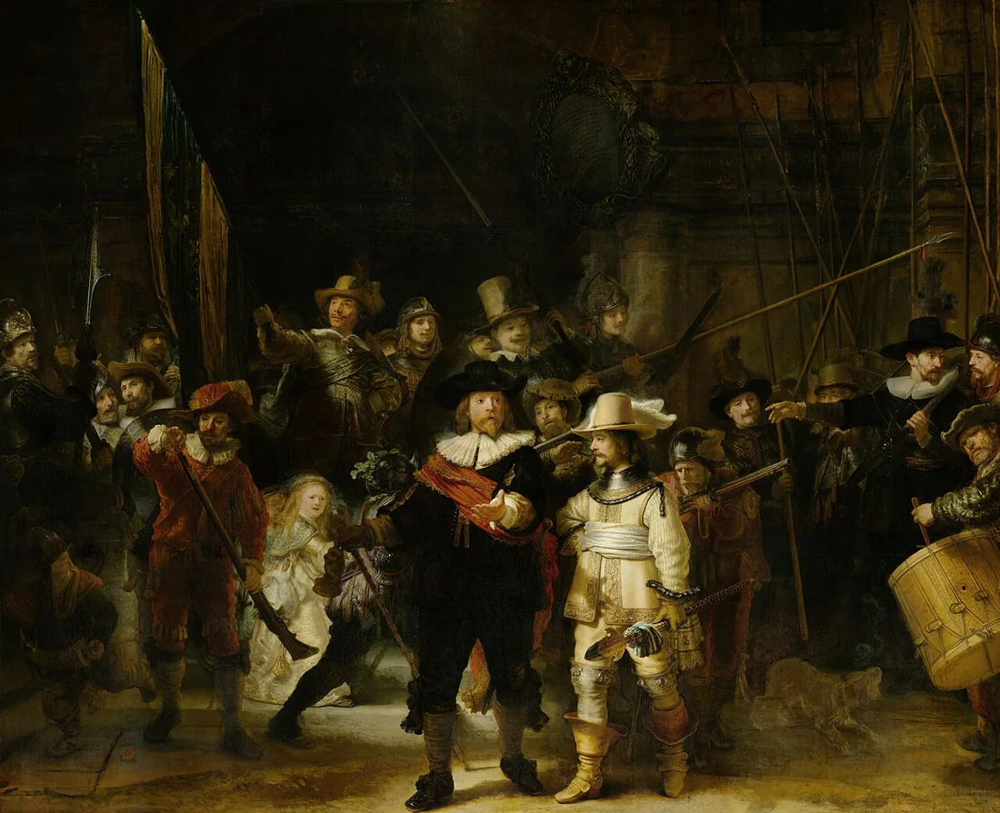

A collection for the incurably curious.
Could a volume knob make a potato chip seem fresher?
Listen to two versions of one crunch. Then see what happened in the experiment.
No sound? The answer works without it.
Sound only plays when you tap Listen.
An illustrative sound comparison. Listening alone does not recreate the experiment.
Yes. Sound changed how fresh the chips seemed.
15of 20 people
They thought the chips came from different packages.
They came from the same package.
Researchers changed the biting sounds people heard through headphones. With louder or enhanced high-frequency feedback, the chips seemed crisper and fresher.
The 15-of-20 count came from informal questions after one small 2004 experiment.
The crunch is part of the experience.
In our comparison, A softens high frequencies and B emphasizes them. Both use the same recording. Your reaction may differ.
The receipts
Zampini & Spence, Journal of Sensory Studies (2004) ↗
The experiment manipulated auditory feedback during biting. The 15-of-20 package response is reported in the discussion, p. 357, as informal post-experiment questioning. It is not a population estimate or a measure of food freshness. Oxford abstract ↗. Our two clips are filtered versions of a separate CC0 recording by Joseph Sardin ↗, not study recordings. The chip image is generated.
Next, a little pocket deception.
Keep wandering ↓Which one has
more copper?
Pick a coin. Or go straight to the answer.
The nickel. And it’s not even close.
as much copper.
In the silver-looking one.
A penny is copper-coated zinc.
A nickel is 75% copper.
one nickel
sixty pennies
Equal copper mass. Not equal spending money.
The receipts
U.S. Mint specifications ↗
Penny: 2.5 g × 2.5% = 0.0625 g copper. Nickel: 5 g × 75% = 3.75 g copper. Ratio: 60. Based on rounded specifications, not individual coin measurements. The coin collection compares copper content, not face value or total coin mass.
the mail has legs.
The last
9miles.
For Supai, home of the Havasupai people, the mail’s final leg is a mule train.

Special delivery. Four-legged edition.Getting there is
only half the trip.
Three hours down the canyon.
Five hours to climb back out.
A longer journey home.
10–22 mules. Five days a week.
The receipts
USPS Postal Facts, May 2026 ↗
USPS reports the nine-mile route, mule count, delivery days, and three-hour descent/five-hour return. Each mark represents one hour; playback is accelerated. The mule is an illustration.
Let’s get very, very close.
One pixel.
0.005 mm of paint.
Scroll from the whole painting into a single square millimeter.
Start with
the whole thing.
The Night Watch, by Rembrandt. There’s a lot to look at. We’re heading for a very small part.
Overview reproduction
1 mm × 1 mm
This tiny patch.
40,000 pixels.
At the museum’s image resolution, 200 pixels fit along each edge. That’s 200 × 200.
Enlarged scale diagram begins here.0.005 mm × 0.005 mm
And this?
One pixel.
Each pixel in the museum photograph represents a patch of paint just five thousandths of a millimeter wide.
Magnified diagram, not a paint photograph.A very big photograph.
For very small details.
717 billionpixels in the photograph
8,439photographs stitched together
The zoom moves from an overview reproduction to mathematical diagrams. It does not display the museum’s full-resolution scan.
The receipts
Rijksmuseum, January 2022 ↗
The museum reports 717 gigapixels, 8,439 photographs, and 0.005 mm per pixel side. Calculation: 1 ÷ 0.005 = 200 pixels per edge; 200 × 200 = 40,000 per square millimeter. Overview reproduction via Wikimedia Commons. The diagram colors do not represent sampled paint.